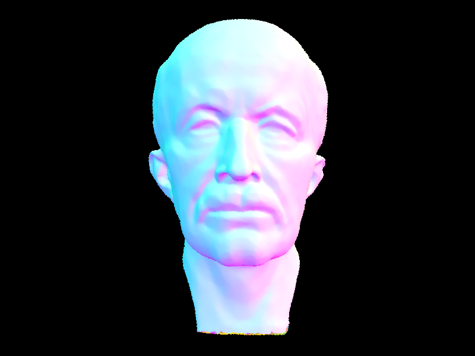
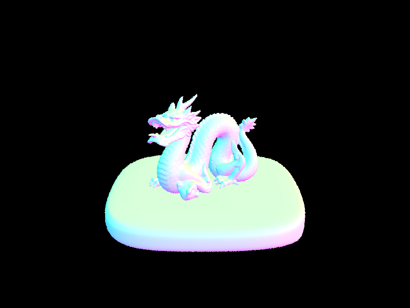

CS184/284A Spring 2025 Homework 3 Write-Up
Link to webpage: cal-cs184-student.github.io/hw-webpages-cc-jd/hw3/index.html Link to GitHub repository: github.com/cal-cs184-student/hw-webpages-cc-jd/edit/master/hw3/index.html

Overview
In this homework, we implemented a ray tracing renderer that simulates global illumination, direct lighting, and camera ray generation. Its main functions involve tracing rays through a scene, determining intersections with geometric primitives like spheres and triangles, and calculating the resulting lighting at each intersection point. We also integrated several advanced features like adaptive sampling, which optimizes the number of samples taken based on variance, and used a bounding volume hierarchy to accelerate ray-primitive intersection tests to improve performance. We also implemented a technique for handling multiple bounces of light to simulate indirect illumination and global illumination effects. Through this homework, we learned how to effectively manage recursive ray tracing for realistic lighting effects and how performance optimizations, like BVH and adaptive sampling, can significantly improve the efficiency of the rendering process. Debugging and fine-tuning the balance between quality and performance also provided valuable insights into the inner workings of physically-based rendering techniques.Part 1: Ray Generation and Scene Intersection
In part 1, we implemented the ray generation and primitive intersection parts of the rendering pipeline. It begins with generating primary rays from the camera, which is handled by the generate_ray method to convert pixel coordinates into rays in world space based on the camera’s parameters. These rays originate from the camera position and shoot out into the scene in directions determined by the camera's projection. The raytrace_pixel method takes these camera rays and determines their radiance contribution by tracing them through the scene. It does this by sampling multiple rays per pixel, estimating radiance using the global illumination method, and averaging the results to determine the final color for that pixel.Once a ray is traced, we need to check if it intersects with any objects in the scene. Thus, we implemented the has_intersection and intersect methods for primitives like triangles and spheres. For ray-triangle intersection, we can use the Möller-Trumbore algorithm to check if there’s a hit, and for ray-sphere intersection, we can solve the quadratic equation. These functions determine whether the ray hits an object, where it hits, and populates the input Intersection structure with information that will be used later for shading calculations.
Ray-Triangle Intersection Algorithm: the Möller-Trumbore algorithm is used to efficiently determine whether a ray intersects a given triangle in 3D space. We start by computing two edge vectors from the triangle’s three vertices, which help define its plane. Next, we calculate the determinant using the cross product of the ray’s direction and one of the edges, followed by a dot product with the other edge. If this determinant is near zero, the ray is parallel to the triangle, so there’s no intersection. To determine the exact intersection point, we compute the barycentric coordinates u and v, which indicate whether the point lies inside the triangle, by calculating dot products with vectors derived from the ray’s origin and triangle edges. If u or v fall outside their valid range, or if their sum is more than 1, the intersection lies outside the triangle. If the intersection is valid, we compute the intersection distance t along the ray and ensure it falls within the ray’s bounds. If so, we update the ray’s maximum intersection distance so that the closest intersection is recorded. Finally, the surface normal is computed using barycentric interpolation of the triangle’s vertex normals to ensure smooth shading, and the intersection data is stored.
|
|
|

|
Part 2: Bounding Volume Hierarchy
The BVH construction algorithm recursively partitions a set of primitives into a tree structure to accelerate ray-object intersection tests. First, we compute a bounding box that encloses all primitives. If the number of primitives in the current partition is less than or equal to the maximum leaf size, a leaf node is created to store them. Otherwise, the algorithm finds a suitable splitting axis and point to divide the primitives into two subgroups. The splitting heuristic we used selects the axis with the largest extent from the bounding box of primitive centroids, to ensure a more balanced partition. If the y-axis has the largest extent, we split along it; otherwise, we compare the x-axis and z-axis, selecting the one with the greater extent. The actual split point is chosen as the centroid of this bounding box along the chosen axis. We then partitioned primitives based on whether their centroids fall to the left or right of this split point. If the partitioning fails (all primitives fall into one group), we go back to splitting at the midpoint of the list. Finally, the algorithm recursively constructs left and right child nodes using the divided primitive sets.

|

|

|
Part 3: Direct Illumination
Direct lighting with uniform hemisphere sampling: this function estimates the direct lighting at a surface point using uniform sampling over a hemisphere. The first step is to create a coordinate system at the intersection point, aligning the surface normal with the z-axis. This helps to transform the directions of incoming and outgoing light into a common frame of reference. The transformation matrix o2w is used to convert local coordinates to world space, and its transpose w2o lets us convert world space coordinates back to local space. Next, the outgoing direction w_out is calculated as the direction from the hit point towards the camera or viewer. The ray's origin is the intersection point hit_p, and its direction is in the opposite direction of the ray's direction transformed into the local space. The direction is then transformed by w2o to map it into the local coordinate system. The number of samples is the product of the number of lights in the scene and the area light constant, which determines how many samples will be taken for each light source. This is followed by a loop where it samples incoming light directions wi uniformly from a hemisphere. For each sampled direction, a ray is cast from the intersection point in the direction of wi. The ray is then tested for intersections with other primitives in the scene using the BVH structure, which optimizes the intersection tests. If the ray intersects an object and that object is a light source (where light source's emission is non-zero), the contribution of that light source to the final lighting is computed. The brdf value is evaluated using the outgoing and incoming directions, and the cosine of the angle between the incoming direction and the surface normal is calculated. In this case, the cosine is the z-component of wi, as the sample is taken from the hemisphere. The radiance contribution is computed by multiplying the bsdf value with the light source emission and the cosine term, then divided by the pdf of the hemisphere sampling. This contribution is summed, then divided by the number of samples to provide the final estimate for the direct lighting at the intersection point.Direct lighting by importance sampling lights: this function estimates direct lighting at an intersection point using importance sampling, focusing only on light sources rather than sampling uniformly across the hemisphere. First, it sets up a coordinate system aligned with the surface normal and computes the outgoing direction w_out, which points towards the viewer. Then, it iterates through all lights in the scene. If a light is a delta light (point light source), only one sample is taken. Otherwise, multiple samples are taken for area lights to improve accuracy. For each sample, the function calls sample_L to obtain an incoming light direction (wi), the distance to the light, and the pdf value. If the pdf is non-positive, the sample is skipped. Next, a shadow ray is cast from the intersection point to check if any object blocks the light. The ray starts slightly above the surface (EPS_F) and extends up to just before the light source. If the ray hits another object, we ignore the sample because the point is in shadow. If the light is visible, we compute the surface response using the bsdf function, which determines how much of the incoming light contributes to the final color. The lighting contribution for this sample is calculated using a Monte Carlo estimator, factoring in the bsdf, the incoming light radiance, and a cosine term for proper shading. If multiple samples were taken, then we average the accumulated contribution. Finally, it returns the estimated direct illumination at the intersection point, accounting for visible light sources and shadows.
Analysis: When comparing the bunny images rendered using the two sampling methods for direct lighting, you can see that the image generated using the uniform hemisphere sampling method shows noticeable graininess, with a slightly darker overall hue across the whole image. This graininess suggests that the lighting has not been sampled as efficiently, leading to a more noisy and less refined appearance. In contrast, the image produced with light sampling is smoother and more polished, with each color more uniformly distributed and without any dark or black pixels. The lighting looks more consistent, providing a more accurate and visually pleasing representation, as light sampling effectively focuses on sampling from the light sources themselves and thus reducing noise and improving the quality of the image.